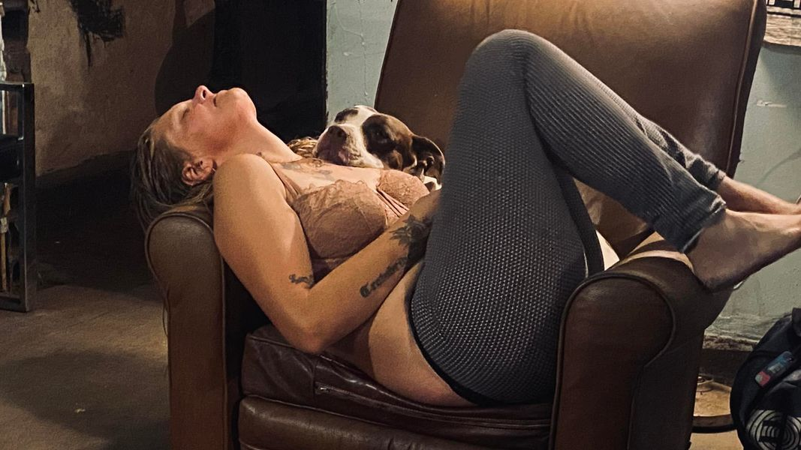

Mobile uploads
This is Kat and her dog Hope.
Kat suffers more than most people I know… and that’s saying a lot.
She has liver damage. She picked up an opiate addiction when she broke her hips when she was young.
I once asked Kat if she liked being high while she was doing that weird, contorted zombie dance that some opiate users do. Honestly, it looked pretty great to me. She looked so gone… which was always my goal as a hardcore binge drinker. I wanted to be off-planet. I wanted to be as far gone as I possibly could be.
As high as I have ever seen anyone, her response during that seemingly blissful, drug-induced, annihilation was that she hated it.
“I hate it,” were her exact words. (I think I have it on video.)
Kat is imprisoned in hell. When I look at Kat I feel like I’m looking at a person living in hell. (And no, your judgement and “tough love” and “love the sinner hate the sin” crap doesn’t help. Just stop. Just try to practice understanding why this woman is forced to suffer so much. If you want to be judgemental about someone you have a lifetime of skeletons in your own closet to go through.)
She said she wasn’t high in this picture. I don’t know why she would lie to me. I have no judgement whatsoever for people who use drugs to self-medicate. They’ve been abandoned by their larger community. There is nothing more cruel you can possibly do to a social creature like a human than to shun and collectively hate them.
And then there is Hope.
I don’t recommend petting Hope if you meet her. She is developing a record for biting nearly everyone. It’s not the savage biting I’ve seen with some other dogs. But I’ve seen a very tough grown man scream and stand on a chair when Hope walks in the room without a leash. He’s been bit by her 3 times.
But look at this dog. Hope will sit like this for hours with Kat. I’ve never met a more committed dog in my life.
It feels like Hope is the counterpoint to all the extreme suffering Kat is forced to endure.
I’ve never seen a more beautiful, committed and loving creature than a homeless person’s dog.
And because of that, dogs always are treated like royalty in the Houseless community. They rarely eat dog food because all the people food they get is so good.
Kat has asked me to see if you might have some dewormer for Hope. She also said something about the fact that Hope is still making milk a year after having puppies.
Thank you for always being the symbol of goodness and kindness that quietly lives in the heart of all humanity but is usually too weak to be the force that leads us as a group.